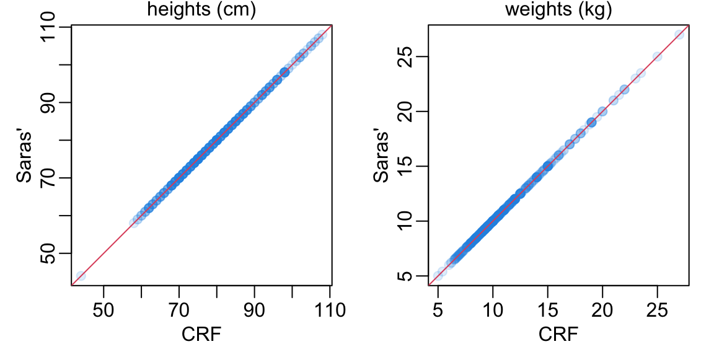
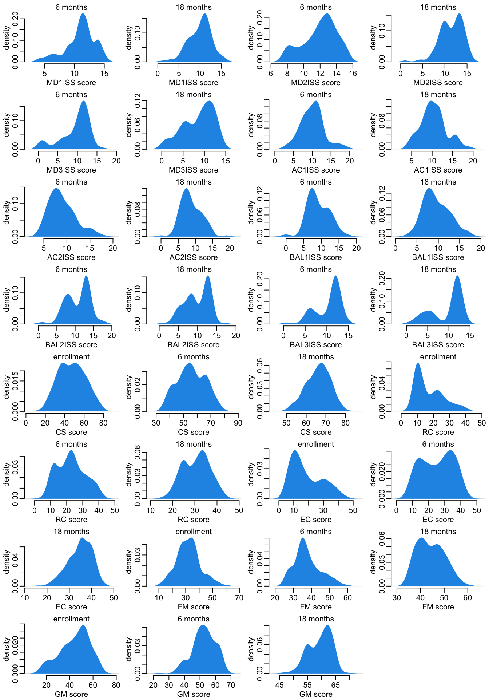
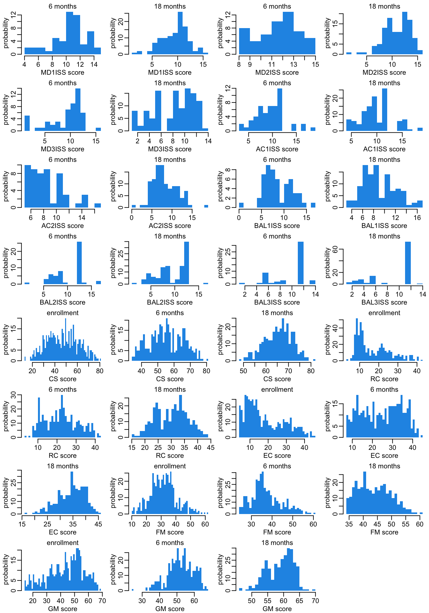
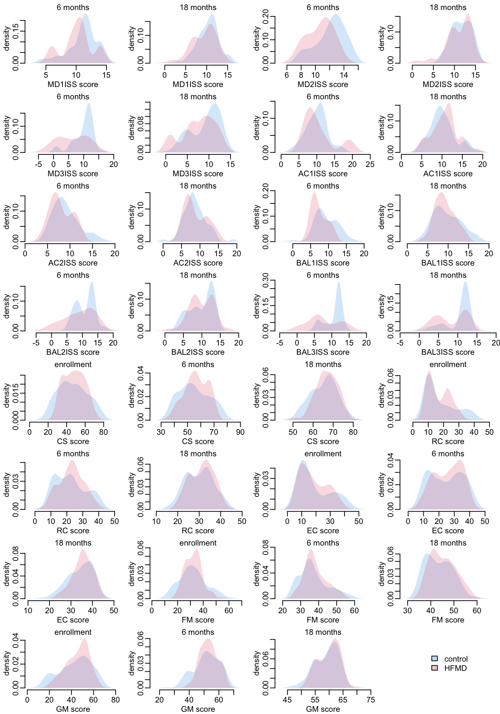
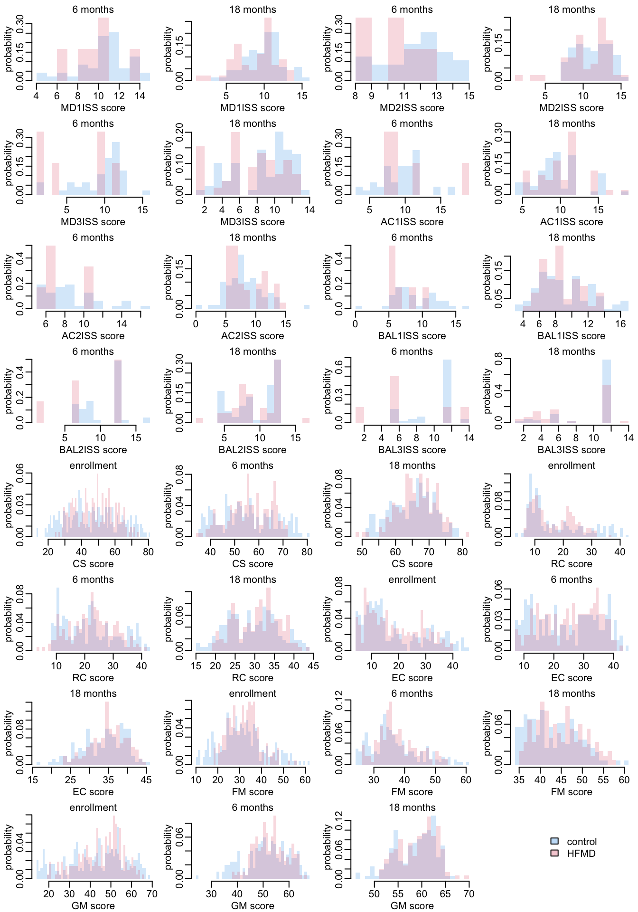
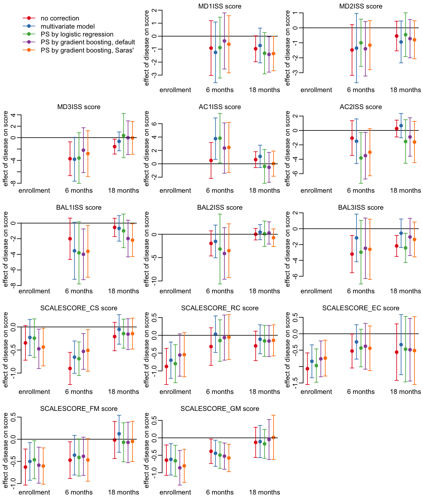
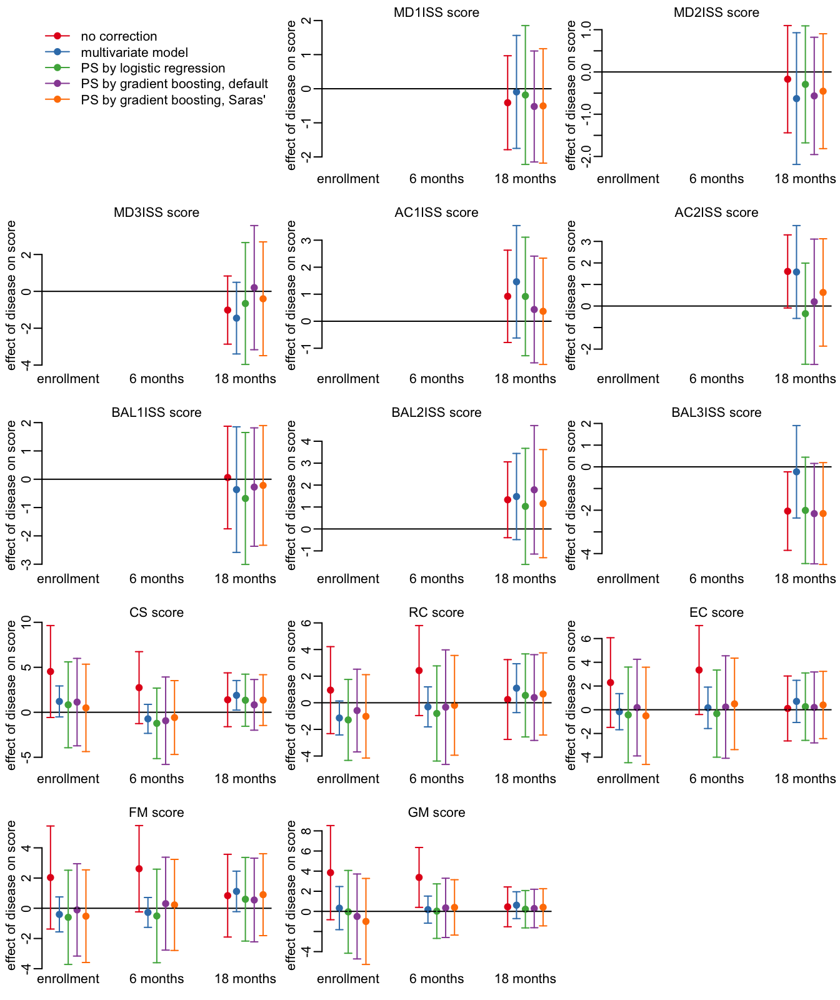
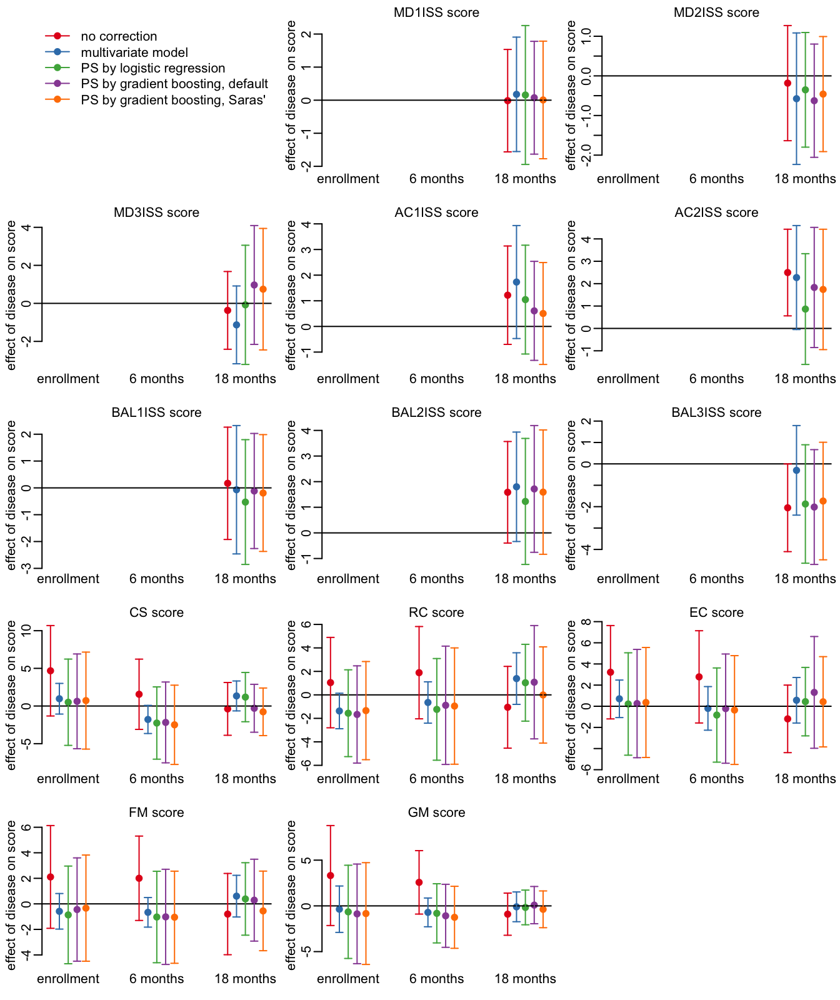

root <- "~/Library/CloudStorage/OneDrive-OxfordUniversityClinicalResearchUnit"
data_folder <- paste0(root, "/GitHub/choisy/08RS/")08RS data
1 Constants
The path to the data folder on the local computer:
2 Packages
Required packages:
required <- c("readxl", "purrr", "dplyr", "magrittr", "tidyr", "anthro", "twang",
"cobalt", "survey", "tmle", "RColorBrewer")Installing those that are not installed yet:
to_install <- required[! required %in% installed.packages()[,"Package"]]
if (length(to_install)) install.packages(to_install)Loading some packages for interactive use:
library(dplyr)
library(purrr)
library(stringr)
library(tidyr)
library(twang)
library(cobalt)
library(survey)
library(tmle)3 Functions
A tuning of the readxl::read_excel() function:
read_excel2 <- function(file, ...) readxl::read_excel(paste0(data_folder, file), ...)A function that reads all the tabs of an excel file in the data folder data_folder defined above:
read_excel_file <- function(file) {
sheets_names <- readxl::excel_sheets(paste0(data_folder, file))
sheets_names |>
map(~ read_excel2(file, .x)) |>
setNames(sheets_names)
}A function that remove some slots of a list, by names:
remove_slots <- function(lst, slt) {
lst[setdiff(names(lst), slt)]
}A function that extracts some variables of some slots of a list x of data frames:
get_vars <- function(sel, x) {
x |>
magrittr::extract(names(sel)) |>
map2(sel, ~ select(.x, !!!.y))
}The variables in questions are defined in the named list sel of character vectors. The names of this list should be among the names of x and the character vectors of each slots should be among the names of the columns of the data frames in the corresponding slots. A function that patches data values from the data frame patch into the data frame df, using the key variable as a common key between the two data frames:
patch <- function(patch, df, key) {
ref <- df[, key]
sel <- df[[key]] %in% patch[[key]]
tmp <- df[sel, ]
tmp_names <- names(tmp)
tmp <- bind_cols(patch, tmp[, setdiff(tmp_names, names(patch))])[tmp_names]
df[! sel, ] |>
bind_rows(tmp) |>
left_join(x = ref, y = _, by = key)
}A function that renames a column of a data frame:
rename2 <- function(df, newname, oldname) {
df_names <- names(df)
df_names[which(df_names == oldname)] <- newname
setNames(df, df_names)
}A function that splits a data frame into a list of data frames:
split_df <- function(x, n_rows) {
nb_rows <- nrow(x)
split(x, gl(nb_rows %/% n_rows + (nb_rows %% n_rows > 0), n_rows, nb_rows))
}A function that appends a data frame x with n rows of values v:
append_dataframe <- function(x, n = 1, v = 0) {
1:ncol(x) |>
map(~ rep(v, n)) |>
as.data.frame() |>
setNames(names(x)) |>
(\(y) bind_rows(x, y))()
}A function that applies append_dataframe() to the last slot of a list x of data frame so that the number of rows of the data frame in the last slot is equal to the number of rows of the data frame in the first lost:
append_last <- function(x, v = 1) {
nb_slots <- length(x)
nb_rows1 <- nrow(x[[1]])
nb_rows2 <- nrow(x[[nb_slots]])
if (nb_rows2 < nb_rows1) {
x[[nb_slots]] <- append_dataframe(x[[nb_slots]], nb_rows1 - nb_rows2, v)
}
x
}A tuning of the image() function:
image2 <- function(x, y, z, ...) image(x, y, t(z[nrow(z):1, ]), ...)A function that adds a zero y value to both ends of a data frame with two columns x and y:
adding_zero_ys <- function(x) {
x <- as_tibble(x[c("x", "y")])
x <- bind_rows(head(x, 1), x, tail(x, 1))
x$y[c(1, nrow(x))] <- 0
x
}A function that converts a 1-row matrix with columns names into a named vector:
as_vector <- function(x) setNames(as.vector(x), colnames(x))A tuning of the coef() function:
coef2 <- function(x) last(coef(x))A tuning of the confint() function:
confint2 <- function(x) as_vector(last(suppressMessages(confint(x))))A function that retrieve the p value of the last parameter of a model:
get_p <- function(x) last(as.vector(coefficients(summary(x))))A tuning of the svyglm() function:
svyglm2 <- function(formula, data, w) {
data |>
svydesign(ids = ~1, weights = w, data = _) |>
svyglm(formula, design = _)
}Shortcut to magrittr::extract(...):
mextract <- function(...) magrittr::extract(...)Shortcut to magrittr::extract2(...):
mextract2 <- function(...) magrittr::extract2(...)A function that pads density coordinates with y zero value points:
pad_density <- function(x) {
tmp <- x$x
x$x <- c(tmp[1], tmp, last(tmp))
x$y <- c(0, x$y, 0)
x
}A tuning of the density() function:
density2 <- function(...) pad_density(density(...))A tuning of the polygon() function:
polygon2 <- function(...) polygon(..., border = NA)A function that computes the range of a variable var across a list x of data frames:
range2 <- function(x, var) {
x |>
map(mextract2, var) |>
range()
}A tuning of the mtext() function:
mtext2 <- function(...) mtext(..., cex = 2 / 3)A tuning of the hist() function:
hist2 <- function(x, ...) hist(x, function(x) min(x):max(x), ...)4 Saras’ CSV file
saras <- readr::read_csv(paste0(root, "/GitHub/choisy/08RS/complete data including ",
"all withdrawals_updated26_3_21.csv"))select(saras, waste, visitM, ddifENB, ddifEN, FUP, FUP1)# A tibble: 1,408 × 6
waste visitM ddifENB ddifEN FUP FUP1
<chr> <dbl> <dbl> <dbl> <chr> <chr>
1 Not Wasted 2 NA 547 18m 18m
2 Not Wasted NA 184 NA 6m <NA>
3 Not Wasted 1 NA 3 ENROL ENROL
4 Not Wasted 2 NA 547 18m 18m
5 Not Wasted 1 182 182 6m 6m
6 Not Wasted NA 11 NA ENROL <NA>
7 Not Wasted NA 567 NA 18m <NA>
8 Not Wasted NA 204 NA 6m <NA>
9 Not Wasted NA 14 NA ENROL <NA>
10 Not Wasted NA 16 NA prem <NA>
# ℹ 1,398 more rowstable(saras$waste)
Not Wasted Waste
1350 43 5 Raw data
5.1 08RS CRF
Loading the data from CliRes:
CRF08RS <- read_excel_file("6-11-2024-CTU08RS_Data.xlsx")The names of the data frames in CliRes and in Saras’ code, with definitions:
# CliRes Saras Definition
# ------------------------------------------------------------------
# ENROL data_EN enrollment
# HIST data_HIST history at enrollment
# CONHIST CONHIST contact history at enrollment
# EXAM data_EX symptoms and signs at enrollment
# LAB data_LAB lab results at admission
# NEU data_NEU neurological exam
# DAILY data_Daily daily review
# MED data_MED medications
# DEVSOCSED data_DEV development and socio-economic data
# DISC data_DISC discharge summary
# FUP data_FUP first follow-up day 7-10
# FUP_II data_FUP6m first follow-up month 6
# FUP_III data_FUP18m first follow-up month 18
# NEURO data_NEURO neurological assessment
# ABC data_MABC movement ABC-2The 08RS CRF dictionary:
CRF_dict <- list(
devsocsed = list(MomEdu = c("Never been to school",
"Attended some primary school",
"Completed primary school (5th gr)",
"Completed lower secondary school (9th gr)",
"Completed higher secondary school (12th gr)",
"Completed university/college degree",
"Completed postgraduate degree"),
Toilet = c("Own flush toilet",
"Shared flush toilet",
"Traditional pit toilet",
"Ventilation improved pit toilet",
"No facility/bush/field",
"None of above"),
Water = c("Private tap",
"Public standpipe",
"Bottled water",
"Well in own residence",
"Public well",
"Rain water",
"Spring",
"River/lake/pond", NA,
"None of the above")),
disc = list(GradeHFMD = c("grade 1",
"grade 2a",
"grade 2b(1)",
"grade 2b(2)",
"grade 3",
"grade 4",
"Not Applicable"),
Outcome = c("Full recovery without complication",
"Incomplete recovery",
"Transferred to another hospital",
"Taken home without approval",
"Death",
"Discharged to die")))Selection of variables from the 08RS CRF:
selection08RS <- list(ENROL = c("ParNo", "DateEnrol", "Gender", "DateBirth"),
HIST = c("ParNo", "DateIllness", "DateAdmHTD", "DateAdmHTD",
"DateAdmHosp", "HFMDToday", "HFMDAdmitted"),
EXAM = c("ParNo", "headCircumference", "height", "weigh"),
DEVSOCSED = c("ParNo", "MomEdu", "Toilet", "Refrigerator",
"AirConditioner", "Motorbike", "Water"),
DISC = c("ParNo", "DateDisc", "GradeHFMD", "TreatSepsis",
"Outcome", "Seizure", "Hypertonicity", "LimbPara",
"CNP", "DiapWeak", "Trache", "Nasotube",
"BehaveChange"))5.2 02EI CRF
CRF02EI <- read_excel_file("6-11-2024-CTU02EI_Data.xlsx")Selection of variables from the 02EI CRF:
selection02EI <- list(Demo = c("studyCode", "height", "weight"),
Hist = c("studyCode", "IllnessDate"),
Disch = c("studyCode", "seizures", "tracheostomy",
"muscleStength", "limbParalysing", "nerveParalysing"))5.3 PCR data
PCR <- "03EI-08RS PCR-Seq result.xlsx" |>
read_excel2("08RS") |>
select(ID, `OUCRU RESULT`) |>
mutate(across(ID, as.numeric)) |>
na.exclude()5.4 MRI data
MRI <- paste0(root, "/GitHub/choisy/08RS/part_dataMRIentry_28AUG15_errorcor.csv") |>
readr::read_csv() |>
rename(ID = code) |>
select(ID, Final, Acute) |>
mutate(across(c("Final", "Acute"), ~ .x == "Yes"))What is the difference between Final and Acute?
filter(MRI, Final != Acute)# A tibble: 10 × 3
ID Final Acute
<dbl> <lgl> <lgl>
1 47 TRUE FALSE
2 51 TRUE FALSE
3 550 TRUE FALSE
4 551 TRUE FALSE
5 557 TRUE FALSE
6 575 TRUE FALSE
7 596 TRUE FALSE
8 597 TRUE FALSE
9 599 TRUE FALSE
10 622 TRUE FALSE6 Children data
6.1 08RS, PCR, MRI
The case and control groups:
groups <- c(rep("HFMD", 299), rep("control", 200),
rep("HFMD", 200), rep("control", 299))First recoding of variables:
recoding1 <- function(x) {
x |>
mutate(across(Gender, ~ c("male", "female")[.x]),
across(starts_with("Date"), as.Date),
across(c("Refrigerator", "AirConditioner",
"Motorbike", "TreatSepsis"), ~ .x < 2))
}Second recoding of variables:
recoding2 <- function(x) {
x |>
mutate(across(HFMD, ~ CRF_dict$disc$GradeHFMD[.x]),
across(MomEdu, ~ CRF_dict$devsocsed$MomEdu[.x]),
across(Toilet, ~ CRF_dict$devsocsed$Toilet[.x]),
across(Water, ~ CRF_dict$devsocsed$Water[.x]),
across(Outcome, ~ CRF_dict$disc$Outcome[.x]))
}Selecting and recoding the variables from the 08RS CRF, and assigning to case or control:
children <- selection08RS |>
remove_slots("ABC") |>
get_vars(CRF08RS) |>
reduce(left_join, by = "ParNo") |>
rowwise() |>
mutate(HFMD = max(across(c(HFMDToday, HFMDAdmitted, GradeHFMD)))) |> #takes max grade
ungroup() |>
recoding1() |>
recoding2() |>
mutate(ID = as.numeric(str_remove(ParNo, "^.*-")),
group = groups[ID]) |>
left_join(MRI, "ID") |>
left_join(PCR, "ID") |>
rename(PCR = `OUCRU RESULT`) |>
select(-HFMDToday, -HFMDAdmitted, -GradeHFMD, -ID) |>
select(ParNo, Gender, DateBirth, DateIllness, DateAdmHosp,
DateAdmHTD, DateEnrol, DateDisc, everything()) |>
arrange(ParNo)6.2 Patching 02EI CRF
Conversion of IDs between 02EI and 08RS:
(ID_conv <- tibble(s02EI = paste0("03-0", c(paste0("0", c(1, 3:9)), c("11", "13"))),
s08RS = paste0("03-0", c(43, 52:56, 60, 62, 78, 79))))# A tibble: 10 × 2
s02EI s08RS
<chr> <chr>
1 03-001 03-043
2 03-003 03-052
3 03-004 03-053
4 03-005 03-054
5 03-006 03-055
6 03-007 03-056
7 03-008 03-060
8 03-009 03-062
9 03-011 03-078
10 03-013 03-079Patching the data values from the 02EI CRF:
children <- selection02EI |>
get_vars(CRF02EI) |>
reduce(left_join, by = "studyCode") |>
mutate(across(IllnessDate, as.Date),
across(c("seizures", "tracheostomy", "muscleStength", "limbParalysing",
"nerveParalysing"), ~ .x < 2)) |>
rename(ParNo = studyCode,
weigh = weight,
DateIllness = IllnessDate,
Seizure = seizures,
Trache = tracheostomy,
Hypertonicity = muscleStength,
LimbPara = limbParalysing,
CNP = nerveParalysing) |>
filter(ParNo %in% ID_conv$s02EI) |>
mutate(across(ParNo, ~ unname(with(ID_conv, setNames(s08RS, s02EI))[.x]))) |>
patch(children, "ParNo")6.3 Stunt and waste
A function that computes stunt and waste variable from weight and height variables:
stunt_waste <- function(x, weight, height) {
x |>
mutate(age = DateEnrol - DateBirth,
z = anthro::anthro_zscores(c(male = 1, female = 2)[Gender],
as.numeric(age),
weight = {{ weight }},
lenhei = {{ height }})[c("zlen", "zwfl")]) |>
unnest(z) |>
mutate(stunting = zlen < -2,
wasting = case_when(is.na(zwfl) ~ NA_character_,
zwfl < -3 ~ "severe",
zwfl < -2 ~ "moderate",
.default = "no")) |>
select(-c(zlen, zwfl))
}Adding stunt and waste data to the children data frame:
children <- stunt_waste(children, weigh, height)6.4 Missing values
A function that computes the numbers and percentages of missing values per variable:
number_of_NA <- function(x) {
x |>
select(- group) |>
map_dfr(~ sum(is.na(.x))) |>
pivot_longer(! ParNo, names_to = "variable", values_to = "number_of_NA") |>
mutate(percentage_of_NA = round(100 * number_of_NA / n)) |>
select(- ParNo)
}Let’s look at the missing values among cases:
cases <- filter(children, group == "HFMD")
n <- nrow(cases)
cases |>
number_of_NA() |>
print(n = Inf)# A tibble: 33 × 3
variable number_of_NA percentage_of_NA
<chr> <int> <dbl>
1 Gender 0 0
2 DateBirth 0 0
3 DateIllness 0 0
4 DateAdmHosp 239 98
5 DateAdmHTD 5 2
6 DateEnrol 0 0
7 DateDisc 9 4
8 headCircumference 135 56
9 height 115 47
10 weigh 114 47
11 MomEdu 0 0
12 Toilet 1 0
13 Refrigerator 0 0
14 AirConditioner 0 0
15 Motorbike 0 0
16 Water 0 0
17 TreatSepsis 19 8
18 Outcome 9 4
19 Seizure 0 0
20 Hypertonicity 0 0
21 LimbPara 0 0
22 CNP 0 0
23 DiapWeak 9 4
24 Trache 0 0
25 Nasotube 9 4
26 BehaveChange 9 4
27 HFMD 16 7
28 Final 155 64
29 Acute 155 64
30 PCR 1 0
31 age 0 0
32 stunting 115 47
33 wasting 115 47And among controls:
controls <- filter(children, group == "control")
n <- nrow(controls)
controls |>
number_of_NA() |>
filter(percentage_of_NA < 100) |>
print(n = Inf)# A tibble: 15 × 3
variable number_of_NA percentage_of_NA
<chr> <int> <dbl>
1 Gender 0 0
2 DateBirth 0 0
3 DateEnrol 0 0
4 headCircumference 2 1
5 height 2 1
6 weigh 1 0
7 MomEdu 1 0
8 Toilet 0 0
9 Refrigerator 0 0
10 AirConditioner 0 0
11 Motorbike 0 0
12 Water 0 0
13 age 0 0
14 stunting 2 1
15 wasting 3 1Retrieving the height, weight and stunt data from Saras’ CSV file:
saras_stunt <- saras |>
select(code, WEIGHT, HEIGHT, headCircumference, stunt, waste) |>
unique() |>
mutate(ParNo = paste0(ifelse(code < 923, "03-", "05-"), sprintf("%03d", code)))Merging with our children data frame:
comparing_data <- children |>
select(ParNo, height, weigh, stunting) |>
left_join(saras_stunt, "ParNo")Checking that children codes match:
setdiff(saras_stunt$ParNo, comparing_data$ParNo)character(0)setdiff(comparing_data$ParNo, saras_stunt$ParNo)character(0)plot_comp <- function(...) {
plot(..., col = adjustcolor(4, .15), pch = 19,
xlab = "CRF", ylab = "Saras'", asp = 1)
abline(0, 1, col = 2)
}Comparing height and weight data:
opar <- par(mfrow = 1:2, pty = "s", plt = rep(c(.2, .93), 2), bty = "o")
comparing_data |>
filter_out(is.na(height)) |>
with(plot_comp(height, HEIGHT))
mtext("heights (cm)", line = .2)
comparing_data |>
filter_out(is.na(weigh)) |>
with(plot_comp(weigh, WEIGHT))
mtext("weights (kg)", line = .2)
par(opar)Comparing stunt data:
comparing_data |>
mutate(across(stunt, ~ .x == "Stunt")) |>
filter_out(is.na(stunting)) |>
group_by(stunting, stunt) |>
tally() |>
ungroup() |>
setNames(c("CRF", "Saras'", "n"))# A tibble: 3 × 3
CRF `Saras'` n
<lgl> <lgl> <int>
1 FALSE FALSE 355
2 FALSE TRUE 6
3 TRUE TRUE 59Patching the children data frame with Saras’ CSV file for weight, height, stunt and waste, and recomputing our stunting and wasting data:
children <- children |>
left_join(saras_stunt, "ParNo") |>
mutate(across(stunt, ~ .x == "Stunt"),
across(waste, ~ .x == "Waste")) |>
stunt_waste(WEIGHT, HEIGHT)7 M-ABC data
ABC <- CRF08RS$ABC |>
select(ParNo, DateTested, ends_with("ISS")) |>
mutate(across(starts_with("Date"), as.Date)) |>
arrange(ParNo, DateTested)Of note, here
MDstands for manual dexterity,ACstands for aiming and catching andBALstands for balance.
ABC |>
na.exclude()# A tibble: 221 × 10
ParNo DateTested MD1ISS MD2ISS MD3ISS AC1ISS AC2ISS BAL1ISS BAL2ISS BAL3ISS
<chr> <date> <dbl> <dbl> <dbl> <dbl> <dbl> <dbl> <dbl> <dbl>
1 03-001 2013-06-21 4 8 0 0 0 0 0 0
2 03-001 2014-12-17 3 10 6 11 6 6 7 1
3 03-001 2015-06-30 5 12 1 9 10 3 1 1
4 03-003 2015-01-15 11 14 13 12 14 14 13 12
5 03-004 2015-01-20 14 16 1 9 6 7 7 6
6 03-007 2015-02-02 9 10 5 8 12 10 11 6
7 03-010 2014-03-20 6 11 1 7 11 6 13 6
8 03-010 2015-03-20 12 12 6 11 12 8 13 4
9 03-016 2015-04-07 8 14 12 12 12 9 13 5
10 03-020 2014-06-24 11 13 10 12 11 9 13 12
# ℹ 211 more rows8 Bayley data
Loading the data from CliRes:
Bayley0 <- read_excel_file("12-9-2025-Bayley_v3_P1_Data.xlsx")The tabs that we are interested in are the following:
- CS: cognitive scale
- RC: receptive communication (language scale)
- EC: expressive communication (language scale)
- FM: fine motor (motor scale)
- GM: gross motor (motor scale)
Bayley_tabs <- c("CS", "RC", "EC", "FM", "GM")Let’s generate the data frame from these tabs:
common_variables1 <- c("PARNO", "DATETESTED")
common_variables2 <- c(common_variables1, "SCALESCORE")
Bayley<- Bayley_tabs |>
map(~ c(common_variables2, .x)) |>
setNames(Bayley_tabs) |>
get_vars(Bayley0) |>
map2(paste0("SCALESCORE_", Bayley_tabs), rename2, "SCALESCORE") |>
reduce(left_join, by = c("PARNO", "DATETESTED")) |>
mutate(across(starts_with("DATE"), as.Date)) |>
rename(ParNo = PARNO) |>
mutate(across(ParNo, ~ stringr::str_remove(.x, "08RS_")))9 Time points
A function that generates the time points:
make_time_points <- function(x) {
children |>
select(ParNo, DateEnrol, DateDisc) |>
left_join(x, "ParNo") |>
mutate(time_diff = DateTested - DateEnrol,
time1 = 0, time2 = 6, time3 = 18, # in months
across(c(time1, time2, time3), ~ as.numeric(abs(time_diff - 30 * .x)))) |>
rowwise() |>
mutate(min_delay = min(across(c(time1, time2, time3)))) |>
ungroup() |>
mutate(time_point = ifelse(min_delay == time1,
"enrollment", ifelse(min_delay == time2,
"6 months", "18 months")))
}A function that gets the IDs of children with duplicated assessments:
get_IDs_with_duplicated <- function(x) {
x |>
filter(! is.na(time_point)) |>
group_by(ParNo) |>
group_modify(~ .x |>
group_by(time_point) |>
tally()) |>
ungroup() |>
filter(n > 1) |>
pull(ParNo) |>
unique()
}A function that uses the previous two to generate the data with duplicated assessments:
show_duplicated_assessments <- function(x) {
data_with_time_points <- make_time_points(x)
IDs_with_duplicates <- get_IDs_with_duplicated(data_with_time_points)
filter(data_with_time_points, ParNo %in% IDs_with_duplicates)
}9.1 M-ABC data
ABC |>
show_duplicated_assessments() |>
writexl::write_xlsx("M-ABC2.xlsx")Here all the duplicates are complete. We’ll simply keep all the earlier ones:
ABC2 <- ABC |>
make_time_points() |>
arrange(ParNo, time_point, min_delay) |>
group_by(ParNo, time_point) |>
group_modify(~ head(.x, 1)) |>
ungroup() |>
select(-DateEnrol, -DateDisc, -min_delay, - time_diff, -time1, -time2, -time3) |>
rename(Date_ABC = DateTested)9.2 Bayley data
Bayley <- rename(Bayley, DateTested = DATETESTED)
Bayley |>
show_duplicated_assessments() |>
writexl::write_xlsx("Bayley2.xlsx")This shows that
- there is one and only one complete measurement per time point
- the complete measurement is always the earlier one, except for patient
03-514
In consequence, we decide to simply filter out all the incomplete duplicates:
Bayley2 <- Bayley |>
make_time_points() |>
group_by(ParNo, time_point) |>
group_modify(~ {if (nrow(.x) > 1) return(na.exclude(.x)); .x }) |>
ungroup() |>
select(-DateEnrol, -DateDisc, -min_delay, - time_diff, -time1, -time2, -time3) |>
rename(Date_Bayley = DateTested)9.3 Merging
Merging the M-ABC and Bayley data:
followups <- full_join(ABC2, Bayley2, c("ParNo", "time_point"))9.4 Visualization
A function that prepend all the data frames of a list x of data frames with n columns of the v values:
prepend_white <- function(x, n, v) {
nbrows <- nrow(x[[1]])
white_space <- v |>
rep(n * nbrows) |>
matrix(nbrows) |>
as.data.frame()
map(x, ~ cbind(white_space, .x))
}A function that (i) splits the data frame x into a list of data frame of n rows (except possibly for the last slot), (ii) prepends each of these data frames with wc columns of 1s, and (iii) concatenate all these data frames side by side into a matrix:
side_by_side <- function(x, n, wc) {
x |>
select(-ParNo) |>
split_df(n) |>
append_last() |>
prepend_white(wc, 1) |>
reduce(cbind) |>
as.matrix()
}A tuning of image2():
image3 <- function(x, col_no, col_yes) {
image2(0:ncol(x), 0:nrow(x), x, axes = FALSE, ann = FALSE, col = c(col_no, col_yes))
}The function that plots the heatmap:
heatmap2 <- function(x, nbrow = 45, nb_wc = 2,
col_Bayley = adjustcolor("red", .3),
col_ABC = adjustcolor("blue", .3),
col_NA = adjustcolor("white", 0),
col_lines = "white", cx = .5) {
# plotting M-ABC data:
tmp <- x |>
select(-Date_Bayley) |>
pivot_wider(names_from = time_point, values_from = Date_ABC) |>
side_by_side(nbrow, nb_wc)
image3(tmp, col_NA, col_Bayley)
# adding Bayley data:
par(new = TRUE)
x |>
select(-Date_ABC) |>
pivot_wider(names_from = time_point, values_from = Date_Bayley) |>
side_by_side(nbrow, nb_wc) |>
image3(col_NA, col_ABC)
# adding separation lines:
abline(v = 0:ncol(tmp), col = col_lines)
abline(h = 0:nbrow, col = col_lines)
# adding children IDs:
ids <- str_remove(unique(x$ParNo), "^.*-")
sel <- 1:length(ids)
by <- 3 + nb_wc
ncol_tmp <- ncol(tmp)
nbcol <- ncol_tmp / by
xs <- rep(seq(1, ncol_tmp, by), each = nbrow)[sel]
ys <- rep(rev(1:nbrow - .5), nbcol)[sel]
text(xs, ys, ids, cex = cx)
# adding time points:
xx <- seq(1 + nb_wc, ncol_tmp, by) - .5
mtext(rep(c("e", "1", "2"), nbcol)[sel], at = sort(c(xx, xx + 1, xx + 2)), cex = cx)
}An overview of the M-ABC and Bayley data for all the children and the 3 time points:
opar <- par(plt = c(.07, .97, .07, .95))
expand_grid(ParNo = unique(followups$ParNo),
time_point = c("enrollment", "6 months", "18 months")) |>
left_join(followups, c("ParNo", "time_point")) |>
select(ParNo, time_point, starts_with("Date")) |>
mutate(across(starts_with("Date"), ~ as.numeric(! is.na(.x)) + 1)) |>
heatmap2()
color_codes <- rgb(c(255, 191, 192),
c(193, 194, 147),
c(193, 255, 213), names = c("m-abc", "bayley", "both"), max = 255)
usr <- par("usr")
legend(usr[1] + mean(usr[1:2]), usr[3] - 2, legend = c("M-ABC", "Bayley", "both"),
fill = color_codes, bty = "n", horiz = TRUE, xpd = TRUE, xjust = .5, yjust = .5)
par(opar)where blue is where the Bayley data are available, red is where the M-ABC data are available, purple is where both data are available and white is where none of the data are available.
10 Analysis
10.1 HFMD vs controls
From here we work with 2 data frames: children that contains the children information, and followups that contains the follow-up data. Note that height and weight (and consequently stunting) is missing for about 22% of children:
children |>
select(group, age, MomEdu, Gender, stunting) |>
map_int(~ sum(is.na(.x))) group age MomEdu Gender stunting
0 0 1 0 3 Some common code:
cols <- c(2, 4)
adjcol <- function(...) adjustcolor(..., alpha = .3)
barplot2 <- function(height, x) {
barplot(height, names.arg = x, beside = TRUE, ylab = "proportion",
col = adjcol(rev(cols)))
}
add_legend1 <- function(where = "topright") {
legend(where, legend = c("control", "HFMD"), fill = adjcol(rev(cols)), bty = "n")
}Let’s look at the age distribution of the controls and HFMD cases:
tmp <- children |>
mutate(across(age, ~ as.numeric(.x) / 30)) |>
group_by(group) |>
group_map(~ .x |> pull(age) |> density(from = 0))
tmp |>
map(~ .x |> unclass() |> magrittr::extract(c("x", "y")) |> as_tibble()) |>
bind_rows() |>
map(range) |>
with(plot(NA, xlim = x, ylim = y, xlab = "age (months)", ylab = "density"))
tmp |>
walk2(cols, ~ polygon(adding_zero_ys(.x), col = adjcol(.y), border = NA))
add_legend1()
Let’s now look at the level of the mother’s education:
edu_order <- c("Never been to school", "Attended some primary school",
"Completed primary school (5th gr)",
"Completed lower secondary school (9th gr)",
"Completed higher secondary school (12th gr)",
"Completed university/college degree", "Completed postgraduate degree")
children |>
with(table(MomEdu, group)) |>
prop.table(2) %>%
`[`(edu_order, ) |>
t() |>
barplot2(c("none", "some", "5th g", "9th g", "12th g", "collg", "postg"))
add_legend1()
Stunt and gender:
children |>
select(group, Gender, stunting) |>
na.exclude() |>
group_by(group) |>
group_split() |>
map(~ .x |> group_by(Gender, stunting) |> tally() |> ungroup()) |>
reduce(left_join, c("Gender", "stunting")) |>
select(starts_with("n")) |>
as.matrix() |>
prop.table(2) |>
t() %>%
`[`(2:1, ) |>
barplot2(rep(c("female", "male"), each = 2))
mtext(rep(c("non-stunt", "stunt"), 2), 1, 1.5, at = seq(2, 11, 3))
add_legend1()
10.2 Propensity scores
The covariates:
covariables <- select(children, ParNo, Gender, age, MomEdu, stunting, group)The formula:
ps_formula <- group ~ Gender + age + MomEdu + stuntingA function that generates a data set for a given response variable at a given time point:
make_data <- function(data, response, timepoint) {
data |>
filter(time_point == timepoint) |>
select(ParNo, all_of(response)) |>
na.exclude() |>
left_join(covariables, "ParNo") |>
select(-ParNo) |>
select(all_of(response), group, everything()) |>
na.exclude()
}A function that prepares the follow-up data:
prepare_fu_data <- function(data = followups, min_nb = 4) {
expand_grid(response = c("MD1ISS", "MD2ISS", "MD3ISS", "AC1ISS", "AC2ISS",
"BAL1ISS", "BAL2ISS", "BAL3ISS",
"CS", "RC", "EC", "FM", "GM"),
timepoint = c("enrollment", "6 months", "18 months")) |>
mutate(dataset = map2(response, timepoint, ~ make_data(data, .x, .y)),
ctable = map(dataset, ~ as.vector(table(.x$group)))) |>
filter(map_lgl(ctable, ~ length(.x) > 1)) |>
mutate(ctable = map(ctable, ~ setNames(.x, c("control", "HFMD")))) |>
unnest_wider(ctable) |>
filter(HFMD > min_nb)
}A function that generates weights from a logistic regression:
logistic_ps <- function(data) {
data |>
mutate(across(group, ~ .x == "HFMD"),
weights = ps_formula |>
glm(binomial, data = pick(everything())) |>
predict(type = "response") %>%
{ ifelse(group, 1, . / (1 - .)) }) |>
pull(weights)
}A function that generates weights from the twang package:
twang_ps <- function(data, ...) {
data |>
mutate(across(group, ~ as.integer(group == "HFMD")),
across(where(~ is.character(.x) | is.logical(.x)), as.factor),
across(age, as.numeric)) |>
as.data.frame() |>
ps(ps_formula, data = _, estimand = "ATT", stop.method = "es.mean",
verbose = FALSE, ...) |>
get.weights("es.mean")
}A function that computes the TMLE:
default_libs <- c("SL.glm", "SL.glmnet", "SL.mean", "SL.gam")
tmle2 <- function(data, response, family = "gaussian",
Qlib = default_libs, glib = default_libs, ...) {
data |>
select(Gender, age, MomEdu, stunting) |>
mutate(across(where(~ is.character(.x) | is.logical(.x)), as.factor),
across(age, as.numeric)) |>
tmle(data[[response]], as.integer(data$group == "HFMD"), W = _, family = family,
Q.SL.library = Qlib, g.SL.library = glib) |>
mextract2(c("estimates", "ATT")) |>
mextract(c("psi", "CI", "pvalue")) |>
unlist() |>
setNames(c("cf_tm", "2.5 %tm", "97.5 %tm", "p_tm"))
}A function that computes balance statistics for diagnostic of the propensity scores:
bal_tab <- function(data, w) {
data |>
mutate(across(group, ~ .x == "HFMD")) |>
bal.tab(ps_formula, data = _, weights = w, s.d.denom = "treated")
}A function that retrieve the balance adjustments for diagnostic of the propensity scores:
get_diff <- function(x) x$Balance$Diff.AdjA function that produce the maximum values of the balance adjustments for diagnostic of the propensity scores:
get_max_diff <- function(data, w) {
data |>
bal_tab(w) |>
get_diff() |>
max()
}A function that generate the formula of the model with the response y:
reformulate2 <- function(y) {
reformulate(c("Gender", "age", "MomEdu", "stunting", "group"), y)
}A function that processes the output of a model in the pipeline() function that follows:
process_model <- function(x, model, nm) {
x |>
mutate(!!paste0("cf_", nm) := map_dbl({{ model }}, coef2),
ci = map({{ model }}, confint2)) |>
unnest_wider(ci) |>
rename_with(~ paste0(.x, nm), ends_with("%")) |>
mutate(!!paste0("p_", nm) := map_dbl({{ model}}, get_p))
}The pipeline:
pipeline <- function(data = followups, min_nb = 4) {
data |>
prepare_fu_data(min_nb) |>
mutate(dataset = map(dataset,
~ mutate(.x, ow = logistic_ps(pick(everything())),
tw = twang_ps(pick(everything())),
t2 = twang_ps(pick(everything()),
n.trees = 5000,
interaction.depth = 2))),
formula = map(response, ~ reformulate("group", .x)),
glm0 = map2(formula, dataset, ~ glm(.x, data = .y)),
glm1 = map2(response, dataset, ~ glm(reformulate2(.x), data = .y)),
m_ow = map2(formula, dataset, ~ svyglm2(.x, .y, ~ow)),
m_tw = map2(formula, dataset, ~ svyglm2(.x, .y, ~tw)),
m_t2 = map2(formula, dataset, ~ svyglm2(.x, .y, ~t2))) |>
process_model(glm0, "l0") |>
process_model(glm1, "l1") |>
process_model(m_ow, "ow") |>
process_model(m_tw, "tw") |>
process_model(m_t2, "t2") #|>
# 6 - TMLE:
# mutate(tmle = map2_dfr(dataset, response, tmle2)) |>
# unnest_wider(tmle)
}A function that computes the diagnostic metrics for a dataset x and for the propensity score weight psw:
diagnostic_metrics <- function(x, psw) {
y <- x[[psw]]
y <- c(max = max,
mea = mean,
med = median,
ess = function(x) sum(x)^2 / sum(x^2)) |>
map_dfc(~ .x(y)) |>
mutate(dif = abs(mea - med),
bal = get_max_diff(x, psw))
names(y) <- paste0(psw, "_", names(y))
y
}A function that runs diagnostic_metrics() on all the datasets of an output x of the pipeline() function, and for the propensity score weight psw:
diagnostic_ps <- function(x, psw) {
x |>
select(response, timepoint, control, HFMD, dataset) |>
mutate(diag = map(dataset, diagnostic_metrics, psw)) |>
unnest_wider(diag) |>
mutate(n = control + HFMD) |>
select(-c(dataset, control, HFMD))
}Running the pipeline (takes 2’):
output <- pipeline()Let’s compare the p values:
output |>
select(response, timepoint, control, HFMD, starts_with("p_")) |>
mutate(across(starts_with("p"), ~ round(.x, 3))) |>
print(n = Inf) # A tibble: 31 × 9
response timepoint control HFMD p_l0 p_l1 p_ow p_tw p_t2
<chr> <chr> <int> <int> <dbl> <dbl> <dbl> <dbl> <dbl>
1 MD1ISS 6 months 47 6 0.398 0.3 0.454 0.735 0.574
2 MD1ISS 18 months 69 45 0.059 0.296 0.104 0.043 0.047
3 MD2ISS 6 months 47 6 0.093 0.256 0.209 0.129 0.161
4 MD2ISS 18 months 69 44 0.282 0.189 0.534 0.265 0.215
5 MD3ISS 6 months 47 6 0.018 0.06 0.111 0.266 0.166
6 MD3ISS 18 months 69 45 0.019 0.435 0.853 0.99 0.971
7 AC1ISS 6 months 47 6 0.717 0.022 0.042 0.216 0.195
8 AC1ISS 18 months 69 43 0.308 0.196 0.76 0.642 0.979
9 AC2ISS 6 months 47 6 0.392 0.349 0.034 0.035 0.069
10 AC2ISS 18 months 69 42 0.659 0.439 0.317 0.502 0.268
11 BAL1ISS 6 months 47 6 0.144 0.064 0.06 0.017 0.033
12 BAL1ISS 18 months 69 42 0.36 0.42 0.363 0.099 0.041
13 BAL2ISS 6 months 47 6 0.159 0.396 0.401 0.14 0.225
14 BAL2ISS 18 months 69 41 0.989 0.581 0.941 0.814 0.439
15 BAL3ISS 6 months 47 6 0.01 0.453 0.143 0.199 0.174
16 BAL3ISS 18 months 67 42 0.002 0.532 0.01 0.379 0.222
17 CS enrollment 248 218 0.26 0 0.137 0.42 0.458
18 CS 6 months 202 197 0.181 0.085 0.77 0.891 0.998
19 CS 18 months 161 149 0.027 0.124 0.958 0.825 0.832
20 RC enrollment 248 217 0.241 0.19 0.538 0.974 0.982
21 RC 6 months 202 195 0.502 0.335 0.89 0.936 0.934
22 RC 18 months 161 149 0.112 0.222 0.893 0.863 0.839
23 EC enrollment 248 218 0.641 0.715 0.949 0.783 0.855
24 EC 6 months 201 195 0.236 0.11 0.844 0.949 0.966
25 EC 18 months 161 148 0.031 0.029 0.705 0.766 0.784
26 FM enrollment 248 218 0.607 0.009 0.373 0.575 0.652
27 FM 6 months 202 196 0.215 0.638 0.946 0.857 0.757
28 FM 18 months 161 149 0.01 0.018 0.928 0.761 0.77
29 GM enrollment 248 216 0.067 0 0.06 0.877 0.87
30 GM 6 months 201 197 0.038 0.049 0.614 0.538 0.447
31 GM 18 months 161 148 0.08 0.758 0.509 0.627 0.713Let’s look at the estimates:
output |>
select(response, timepoint, control, HFMD, starts_with("cf")) |>
mutate(across(starts_with("cf"), ~ round(.x, 2))) |>
print(n = Inf) # A tibble: 31 × 9
response timepoint control HFMD cf_l0 cf_l1 cf_ow cf_tw cf_t2
<chr> <chr> <int> <int> <dbl> <dbl> <dbl> <dbl> <dbl>
1 MD1ISS 6 months 47 6 -0.92 -1.25 -0.88 -0.37 -0.62
2 MD1ISS 18 months 69 45 -0.97 -0.72 -1.32 -1.41 -1.34
3 MD2ISS 6 months 47 6 -1.48 -1.36 -1 -1.4 -1.16
4 MD2ISS 18 months 69 44 -0.55 -0.94 -0.46 -0.72 -0.8
5 MD3ISS 6 months 47 6 -3.71 -3.8 -3.59 -2.2 -2.81
6 MD3ISS 18 months 69 45 -1.58 -0.66 0.36 -0.02 -0.05
7 AC1ISS 6 months 47 6 0.5 3.76 3.83 2.35 2.45
8 AC1ISS 18 months 69 43 0.62 1.11 -0.39 -0.53 0.02
9 AC2ISS 6 months 47 6 -1.06 -1.5 -3.82 -3.5 -3.02
10 AC2ISS 18 months 69 42 0.26 0.67 -1.53 -0.91 -1.61
11 BAL1ISS 6 months 47 6 -2.01 -3.55 -3.81 -4 -3.62
12 BAL1ISS 18 months 69 42 -0.55 -0.68 -0.99 -1.98 -2.18
13 BAL2ISS 6 months 47 6 -1.96 -1.53 -3.15 -4.12 -3.53
14 BAL2ISS 18 months 69 41 0.01 0.46 0.1 0.28 -0.74
15 BAL3ISS 6 months 47 6 -3.2 -1.16 -2.96 -2.47 -2.61
16 BAL3ISS 18 months 67 42 -2.17 -0.57 -2.43 -1.04 -1.36
17 CS enrollment 248 218 1.45 2.15 2.05 1.03 0.92
18 CS 6 months 202 197 1.37 0.8 0.33 -0.14 0
19 CS 18 months 161 149 1.54 0.7 -0.04 -0.16 -0.16
20 RC enrollment 248 217 -0.97 -0.47 -0.52 0.03 -0.02
21 RC 6 months 202 195 0.59 0.42 -0.14 0.08 0.08
22 RC 18 months 161 149 1.09 0.58 0.1 0.12 0.15
23 EC enrollment 248 218 -0.46 0.16 -0.06 0.27 0.18
24 EC 6 months 201 195 1.19 0.83 0.22 0.08 -0.05
25 EC 18 months 161 148 1.31 0.97 0.25 0.2 0.19
26 FM enrollment 248 218 0.43 0.79 0.81 0.42 0.33
27 FM 6 months 202 196 0.9 0.14 -0.06 0.12 0.22
28 FM 18 months 161 149 1.69 0.85 0.06 0.21 0.2
29 GM enrollment 248 216 2.16 2.56 2.38 0.17 0.18
30 GM 6 months 201 197 1.55 0.74 0.43 -0.42 -0.56
31 GM 18 months 161 148 0.82 0.11 -0.33 -0.27 -0.22Computing the diagnostic metrics for all the propensity score weights:
c("ow", "tw", "t2") |>
map(diagnostic_ps, x = output) |>
walk(print, n = Inf)# A tibble: 31 × 9
response timepoint ow_max ow_mea ow_med ow_ess ow_dif ow_bal n
<chr> <chr> <dbl> <dbl> <dbl> <dbl> <dbl> <dbl> <int>
1 MD1ISS 6 months 1.91 0.191 5.89e-10 8.47 0.191 0.167 53
2 MD1ISS 18 months 10.9 0.816 3.64e- 1 22.2 0.452 0.0952 114
3 MD2ISS 6 months 1.91 0.191 5.89e-10 8.47 0.191 0.167 53
4 MD2ISS 18 months 10.4 0.785 3.34e- 1 22.9 0.451 0.0866 113
5 MD3ISS 6 months 1.91 0.191 5.89e-10 8.47 0.191 0.167 53
6 MD3ISS 18 months 10.9 0.816 3.64e- 1 22.2 0.452 0.0952 114
7 AC1ISS 6 months 1.91 0.191 5.89e-10 8.47 0.191 0.167 53
8 AC1ISS 18 months 9.98 0.775 3.10e- 1 23.1 0.465 0.0852 112
9 AC2ISS 6 months 1.91 0.191 5.89e-10 8.47 0.191 0.167 53
10 AC2ISS 18 months 9.39 0.765 2.55e- 1 22.5 0.510 0.113 111
11 BAL1ISS 6 months 1.91 0.191 5.89e-10 8.47 0.191 0.167 53
12 BAL1ISS 18 months 9.39 0.765 2.55e- 1 22.5 0.510 0.113 111
13 BAL2ISS 6 months 1.91 0.191 5.89e-10 8.47 0.191 0.167 53
14 BAL2ISS 18 months 9.11 0.753 2.54e- 1 22.7 0.499 0.113 110
15 BAL3ISS 6 months 1.91 0.191 5.89e-10 8.47 0.191 0.167 53
16 BAL3ISS 18 months 11.6 0.751 2.71e- 1 19.9 0.480 0.196 109
17 CS enrollment 1.89 0.904 1 e+ 0 403. 0.0961 0.0596 466
18 CS 6 months 2.55 0.939 1 e+ 0 334. 0.0605 0.0609 399
19 CS 18 months 3.05 0.927 1 e+ 0 261. 0.0727 0.0738 310
20 RC enrollment 1.89 0.901 1 e+ 0 401. 0.0986 0.0599 465
21 RC 6 months 2.54 0.937 1 e+ 0 332. 0.0632 0.0615 397
22 RC 18 months 3.05 0.927 1 e+ 0 261. 0.0727 0.0738 310
23 EC enrollment 1.89 0.904 1 e+ 0 403. 0.0961 0.0596 466
24 EC 6 months 2.54 0.939 1 e+ 0 331. 0.0609 0.0615 396
25 EC 18 months 3.03 0.923 1 e+ 0 261. 0.0766 0.0743 309
26 FM enrollment 1.89 0.904 1 e+ 0 403. 0.0961 0.0596 466
27 FM 6 months 2.54 0.937 1 e+ 0 333. 0.0630 0.0612 398
28 FM 18 months 3.05 0.927 1 e+ 0 261. 0.0727 0.0738 310
29 GM enrollment 1.90 0.899 1 e+ 0 400. 0.101 0.0602 464
30 GM 6 months 2.55 0.942 1 e+ 0 334. 0.0582 0.0609 398
31 GM 18 months 3.03 0.923 1 e+ 0 261. 0.0766 0.0743 309
# A tibble: 31 × 9
response timepoint tw_max tw_mea tw_med tw_ess tw_dif tw_bal n
<chr> <chr> <dbl> <dbl> <dbl> <dbl> <dbl> <dbl> <int>
1 MD1ISS 6 months 1.04 0.156 0.00534 9.41 0.150 0.209 53
2 MD1ISS 18 months 4.47 0.599 0.391 50.1 0.208 0.0948 114
3 MD2ISS 6 months 1.04 0.156 0.00534 9.41 0.150 0.209 53
4 MD2ISS 18 months 4.22 0.591 0.330 48.7 0.261 0.108 113
5 MD3ISS 6 months 1.04 0.156 0.00534 9.41 0.150 0.209 53
6 MD3ISS 18 months 4.47 0.599 0.391 50.1 0.208 0.0948 114
7 AC1ISS 6 months 1.04 0.156 0.00534 9.41 0.150 0.209 53
8 AC1ISS 18 months 1 0.386 0.00345 43.4 0.382 0.107 112
9 AC2ISS 6 months 1.04 0.156 0.00534 9.41 0.150 0.209 53
10 AC2ISS 18 months 1 0.386 0.0171 43.7 0.369 0.110 111
11 BAL1ISS 6 months 1.04 0.156 0.00534 9.41 0.150 0.209 53
12 BAL1ISS 18 months 1 0.386 0.0171 43.7 0.369 0.110 111
13 BAL2ISS 6 months 1.04 0.156 0.00534 9.41 0.150 0.209 53
14 BAL2ISS 18 months 4.48 0.569 0.345 46.3 0.224 0.0918 110
15 BAL3ISS 6 months 1.04 0.156 0.00534 9.41 0.150 0.209 53
16 BAL3ISS 18 months 1 0.418 0.0404 48.2 0.377 0.0871 109
17 CS enrollment 6.01 0.825 1 321. 0.175 0.0726 466
18 CS 6 months 3.48 0.885 1 309. 0.115 0.0609 399
19 CS 18 months 3.41 0.862 1 241. 0.138 0.0738 310
20 RC enrollment 4.73 0.840 1 342. 0.160 0.0636 465
21 RC 6 months 3.30 0.876 1 305. 0.124 0.0615 397
22 RC 18 months 3.41 0.862 1 241. 0.138 0.0738 310
23 EC enrollment 6.01 0.825 1 321. 0.175 0.0726 466
24 EC 6 months 3.71 0.872 1 295. 0.128 0.0615 396
25 EC 18 months 3.28 0.860 1 241. 0.140 0.0743 309
26 FM enrollment 6.01 0.825 1 321. 0.175 0.0726 466
27 FM 6 months 3.36 0.880 1 308. 0.120 0.0612 398
28 FM 18 months 3.41 0.862 1 241. 0.138 0.0738 310
29 GM enrollment 6.24 0.824 1 315. 0.176 0.0711 464
30 GM 6 months 3.50 0.884 1 307. 0.116 0.0609 398
31 GM 18 months 3.28 0.860 1 241. 0.140 0.0743 309
# A tibble: 31 × 9
response timepoint t2_max t2_mea t2_med t2_ess t2_dif t2_bal n
<chr> <chr> <dbl> <dbl> <dbl> <dbl> <dbl> <dbl> <int>
1 MD1ISS 6 months 1.45 0.179 0.0192 10.5 0.160 0.167 53
2 MD1ISS 18 months 5.09 0.601 0.385 49.0 0.216 0.0914 114
3 MD2ISS 6 months 1.45 0.179 0.0192 10.5 0.160 0.167 53
4 MD2ISS 18 months 5.34 0.600 0.361 45.8 0.239 0.0883 113
5 MD3ISS 6 months 1.45 0.179 0.0192 10.5 0.160 0.167 53
6 MD3ISS 18 months 5.09 0.601 0.385 49.0 0.216 0.0914 114
7 AC1ISS 6 months 1.45 0.179 0.0192 10.5 0.160 0.167 53
8 AC1ISS 18 months 5.12 0.590 0.339 46.6 0.252 0.0904 112
9 AC2ISS 6 months 1.45 0.179 0.0192 10.5 0.160 0.167 53
10 AC2ISS 18 months 1 0.413 0.0721 48.7 0.341 0.133 111
11 BAL1ISS 6 months 1.45 0.179 0.0192 10.5 0.160 0.167 53
12 BAL1ISS 18 months 1 0.413 0.0721 48.7 0.341 0.133 111
13 BAL2ISS 6 months 1.45 0.179 0.0192 10.5 0.160 0.167 53
14 BAL2ISS 18 months 1 0.407 0.0658 47.8 0.342 0.137 110
15 BAL3ISS 6 months 1.45 0.179 0.0192 10.5 0.160 0.167 53
16 BAL3ISS 18 months 1 0.416 0.0461 47.9 0.370 0.0758 109
17 CS enrollment 4.99 0.852 1 332. 0.148 0.0596 466
18 CS 6 months 6.44 0.862 1 252. 0.138 0.0609 399
19 CS 18 months 3.31 0.871 1 235. 0.129 0.0738 310
20 RC enrollment 4.99 0.852 1 333. 0.148 0.0599 465
21 RC 6 months 3.34 0.895 1 306. 0.105 0.0615 397
22 RC 18 months 3.31 0.871 1 235. 0.129 0.0738 310
23 EC enrollment 4.99 0.852 1 332. 0.148 0.0596 466
24 EC 6 months 3.34 0.896 1 303. 0.104 0.0615 396
25 EC 18 months 3.29 0.868 1 235. 0.132 0.0743 309
26 FM enrollment 4.99 0.852 1 332. 0.148 0.0596 466
27 FM 6 months 7.69 0.842 1 235. 0.158 0.0612 398
28 FM 18 months 3.31 0.871 1 235. 0.129 0.0738 310
29 GM enrollment 4.71 0.853 1 336. 0.147 0.0602 464
30 GM 6 months 5.53 0.874 1 267. 0.126 0.0609 398
31 GM 18 months 3.29 0.868 1 235. 0.132 0.0743 309Interpretations:
- covariates balance < 0.1 is good. Values between 0.1 and 0.2 are indicative of moderate imbalance. Values above 0.2 are a problem.
- weights should not be too high.
- weights distribution should not be too heavy right tail.
- mean an median of weights should not be too different.
- effective sample size should not be too different from real sample size (not less than 50% of original sample size).
- effective sample size should not be lower than the number treated.
- max weight should not be much higher than 10 to 20 times the median weight.
10.3 Responses
A function that plots the density of the response for a given data set (where the response is the first variable of input x data frame):
plot_density1 <- function(dataset, response, timepoint) {
dataset |>
pull(1) |>
density2() |>
(\(x) {
plot(x, type = "n", xlab = paste(response, "score"), ylab = "density")
polygon2(x, col = 4)
})()
mtext(timepoint, cex = 2 / 3)
}The same function as above but with a histogram:
plot_histogram1 <- function(dataset, response, timepoint) {
dataset |>
pull(1) |>
hist2(col = 4, border = NA, main = NA,
xlab = paste(response, "score"), ylab = "probability")
mtext(timepoint, cex = 2 / 3)
}This function splits the response (i.e. first variable) of the x data frame into control and disease:
split2control_disease <- function(x) {
c("control", "HFMD") |>
set_names() |>
map(~ x |> filter(group == .x) |> pull(1))
}This function does the same as plot_density1() but for the control and infected separately:
plot_density2 <- function(dataset, response, timepoint) {
dataset |>
split2control_disease() |>
map(density2) |>
(\(x) {
plot(NA, xlim = range2(x, "x"), ylim = range2(x, "y"),
xlab = paste(response, "score"), ylab = "density")
walk2(x, adjustcolor(c(4, 2), .2), ~ polygon2(.x, col = .y))
})()
mtext(timepoint, cex = 2 / 3)
}The histogram version:
plot_histogram2 <- function(dataset, response, timepoint) {
dataset |>
split2control_disease() |>
map(hist2, plot = FALSE) |>
(\(x) {
plot(NA, xlim = range2(x, "breaks"), ylim = range2(x, "density"),
xlab = paste(response, "score"), ylab = "probability")
walk2(x, adjustcolor(c(4, 2), .2),
~ plot(.x, col = .y, freq = FALSE, border = NA, add = TRUE))
})()
mtext(timepoint, cex = 2 / 3)
}Let’s look at the distribution of the responses:
opar <- par(mfrow = c(8, 4), plt = c(.2, .97, .27, .87))
output |>
select(dataset, response, timepoint) |>
pwalk(plot_density1)
par(opar)
The histogram version:
opar <- par(mfrow = c(8, 4), plt = c(.2, .97, .27, .87))
output |>
select(dataset, response, timepoint) |>
pwalk(plot_histogram1)
par(opar)
Let’s look at the distribution of the responses, distinguishing control (in blue) and infected patients (red):
opar <- par(mfrow = c(8, 4), plt = c(.2, .97, .27, .87))
output |>
select(dataset, response, timepoint) |>
pwalk(plot_density2)
plot(1, type = "n", ann = FALSE, axes = FALSE)
add_legend1("center")
par(opar)The histogram version:
opar <- par(mfrow = c(8, 4), plt = c(.2, .97, .27, .87))
output |>
select(dataset, response, timepoint) |>
pwalk(plot_histogram2)
plot(1, type = "n", ann = FALSE, axes = FALSE)
add_legend1("center")
par(opar)10.4 Plotting effects
The methods and their color code:
methods <- c("l0", "l1", "ow", "tw", "t2")
cols <- RColorBrewer::brewer.pal(length(methods), "Set1")The time points:
timepoints <- c("enrollment", "6 months", "18 months")
template <- tibble(timepoint = timepoints)A function that prepares the data:
prepare_data <- function(method, data) {
data |>
select(timepoint, ends_with(method), -starts_with(c("p", "m"))) |>
left_join(template, y = _, "timepoint") |>
mutate(x = 1:n()) |>
setNames(c("timepoint", "y", "l", "u", "x"))
}A function that plots the effect for 1 score, for the 3 time points and the 5 methods:
plot_effects <- function(x) {
x |>
map2(seq(-.2, .2, .1), ~ mutate(.x, x = x + .y)) |>
map2(cols, ~ mutate(.x, col = .y)) |>
bind_rows() |>
with({
plot(x, y, ylim = c(min(l, na.rm = TRUE), max(u, na.rm = TRUE)), col = col,
axes = FALSE, xlab = NA, pch = 19, ylab = "effect of disease on score")
abline(h = 0)
arrows(x, l, x, u, .03, 90, 3, col)
})
axis(2)
}A function that combines prepare_data() and plot_effects():
plot_1_variable <- function(var, data) {
methods |>
map(prepare_data, filter(data, response == var)) |>
plot_effects()
mtext2(paste(var, "score"))
mtext2(timepoints, 1, at = seq_along(timepoints))
}The function that plots the effects for all the scores, for all time points and methods:
plot_effects_all <- function(x) {
plot(1, type = "n", ann = FALSE, axes = FALSE)
legend("topleft", col = cols, lwd = 1, pch = 19, bty = "n",
legend = c("no correction", "multivariate model", "PS by logistic regression",
"PS by gradient boosting, default",
"PS by gradient boosting, Saras'"))
x |>
pull(response) |>
unique() |>
walk(plot_1_variable, x)
}Let’s plot the effect for all the score, time points and methods:
opar <- par(mfrow = c(5, 3), plt = c(.15, .97, .15, .9))
plot_effects_all(output)
#plot(1, type = "n", ann = FALSE, axes = FALSE)
#legend("topleft", col = cols, lwd = 1, pch = 19, bty = "n",
# legend = c("no correction", "multivariate model", "PS by logistic regression",
# "PS by gradient boosting, default",
# "PS by gradient boosting, Saras'"))
#
#output |>
# pull(response) |>
# unique() |>
# walk(plot_1_variable, output)
par(opar)
11 EV-A71 and severe cases
The various PCR results:
sort(unique(children$PCR)) [1] "CV-A10" "CV-A12" "CV-A16" "CV-A2"
[5] "CV-A4" "CV-A6" "CV-A8" "CV-A8/EV-A71"
[9] "CV-B1" "CV-B4" "CV-B5" "E-11"
[13] "E-14" "E-30" "E-9" "EV"
[17] "EV-A71" "EV-A71 B5" "EV-A71/ RhiA" "EV-A71/CV A24"
[21] "EV-A71/CV-A6" "EV-A71/RhiA" "EV-C96" "neg"
[25] "PV2" "RhiA" Severity vs EV71:
children |>
filter(group == "HFMD") |>
mutate(EV71 = str_detect(PCR, "EV-A71")) |>
with(table(HFMD, EV71)) EV71
HFMD FALSE TRUE
grade 2a 78 9
grade 2b(1) 45 7
grade 2b(2) 4 2
grade 3 9 18
grade 4 1 1
Not Applicable 49 4A function that filters the patients in the followups data frame according to some rules on the variables on the children data frame:
filter_patients <- function(...) {
sel <- children |>
filter(...) |>
pull(ParNo)
filter(followups, ParNo %in% sel)
}11.1 Severe cases
Running the pipeline on the severe cases only:
output_sev <- filter_patients(group == "control" |
!(HFMD %in% c("grade 2a", "Not Applicable"))) |>
pipeline()The number of data points:
output_sev |>
select(response, timepoint, control, HFMD) |>
print(n = Inf)# A tibble: 23 × 4
response timepoint control HFMD
<chr> <chr> <int> <int>
1 MD1ISS 18 months 69 21
2 MD2ISS 18 months 69 20
3 MD3ISS 18 months 69 21
4 AC1ISS 18 months 69 20
5 AC2ISS 18 months 69 19
6 BAL1ISS 18 months 69 19
7 BAL2ISS 18 months 69 18
8 BAL3ISS 18 months 67 19
9 CS enrollment 248 92
10 CS 6 months 202 84
11 CS 18 months 161 63
12 RC enrollment 248 91
13 RC 6 months 202 82
14 RC 18 months 161 63
15 EC enrollment 248 92
16 EC 6 months 201 82
17 EC 18 months 161 63
18 FM enrollment 248 92
19 FM 6 months 202 83
20 FM 18 months 161 63
21 GM enrollment 248 91
22 GM 6 months 201 84
23 GM 18 months 161 63Looking at the HFMD effects:
opar <- par(mfrow = c(5, 3), plt = c(.15, .97, .15, .9))
plot_effects_all(output_sev)
par(opar)
11.2 EV71 cases
Running the pipeline on the EV71 cases only:
output_ev71 <- filter_patients(group == "control" | str_detect(PCR, "EV-A71")) |>
pipeline()The number of data points:
output_ev71 |>
select(response, timepoint, control, HFMD) |>
print(n = Inf)# A tibble: 23 × 4
response timepoint control HFMD
<chr> <chr> <int> <int>
1 MD1ISS 18 months 69 16
2 MD2ISS 18 months 69 15
3 MD3ISS 18 months 69 16
4 AC1ISS 18 months 69 15
5 AC2ISS 18 months 69 15
6 BAL1ISS 18 months 69 15
7 BAL2ISS 18 months 69 15
8 BAL3ISS 18 months 67 15
9 CS enrollment 248 41
10 CS 6 months 202 36
11 CS 18 months 161 20
12 RC enrollment 248 41
13 RC 6 months 202 36
14 RC 18 months 161 20
15 EC enrollment 248 41
16 EC 6 months 201 36
17 EC 18 months 161 20
18 FM enrollment 248 41
19 FM 6 months 202 36
20 FM 18 months 161 20
21 GM enrollment 248 40
22 GM 6 months 201 36
23 GM 18 months 161 20Looking at the HFMD effects:
opar <- par(mfrow = c(5, 3), plt = c(.15, .97, .15, .9))
plot_effects_all(output_ev71)
par(opar)
11.3 Severe EV71 cases
Running the pipeline on the EV71 cases only:
output_sev71 <- filter_patients(group == "control" |
(str_detect(PCR, "EV-A71") &
!(HFMD %in% c("grade 2a", "Not Applicable")))) |>
pipeline()The number of data points:
output_sev71 |>
select(response, timepoint, control, HFMD) |>
print(n = Inf)# A tibble: 23 × 4
response timepoint control HFMD
<chr> <chr> <int> <int>
1 MD1ISS 18 months 69 12
2 MD2ISS 18 months 69 11
3 MD3ISS 18 months 69 12
4 AC1ISS 18 months 69 11
5 AC2ISS 18 months 69 11
6 BAL1ISS 18 months 69 11
7 BAL2ISS 18 months 69 11
8 BAL3ISS 18 months 67 11
9 CS enrollment 248 29
10 CS 6 months 202 26
11 CS 18 months 161 14
12 RC enrollment 248 29
13 RC 6 months 202 26
14 RC 18 months 161 14
15 EC enrollment 248 29
16 EC 6 months 201 26
17 EC 18 months 161 14
18 FM enrollment 248 29
19 FM 6 months 202 26
20 FM 18 months 161 14
21 GM enrollment 248 29
22 GM 6 months 201 26
23 GM 18 months 161 14Looking at the HFMD effects:
opar <- par(mfrow = c(5, 3), plt = c(.15, .97, .15, .9))
plot_effects_all(output_sev71)
par(opar)